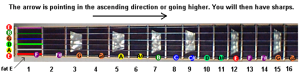

There are 12 notes in western (not middle eastern) music.
A, A#, B, C, C#, D, D#, E, F, F#, G, G# (# stands for sharp)
The notes that have #'s (sharps) in them can also be referred to as b's (flats) but we will get into that later, for now just think of them as #s.
Every fret on the fretboard makes the sound of one of these 12 notes. We name each location on the fretboard (each fret on each string) by the sound that it makes. For example every green circle in the second photo makes a G sound. Many are in different octives but they all make a G. Grab your guitar and a tuner and play random notes and see if they coorespond to this diagram. (If your guitar is tuned than they will)

Standard tuning octive hack to not have to learn the whole fretboard.
A scale is a formula that helps us group notes together. The Major scale is the scale (group of notes) that all of western music is based on. Pretty much all music theory traces it's roots back to the major scale.
Learning the major scale will make it possible for you to easily figure out what key a song is in, know what chords are in a key, what notes are in a chord, what notes are in a scale as well as many other things.
Here is a diagram of one octive of the major scale on a guitar.
So I said a scale is a formula right? Well what is the formula for the Major scale?
The major scale is based on two different intervals (distances in music) half steps and whole steps, a half step is equal to one note. This means when you move over a half step you move over one fret (one note) and when you move over a whole step you move over two frets(two notes).
Photo showing this
The major scale Forumla is: W, W, H, W, W, W, H
Here is an example. Photo and examples written out showing all the notes and how major scales are derrived from them.
3. How to make major and minor chords.
A. How to make a major chord.
B. How to make a
minor chord.
4. What are the chords in a key and how to find them.
Tell the rules.
Show the proof.
show how awesome this is
5. How does the pentatonic scale work and what is soloing by key.
6. How to "play the changes".
A. What are arpeggios.
B. how to use them with
the pentatonic scale and the caged system.
7. Extended chords
A. What are they.
B. How are they useful for
rythym playing and harmony
C. How are they useful for soloing.
6. How is this knowledge applicable to my guitar playing?